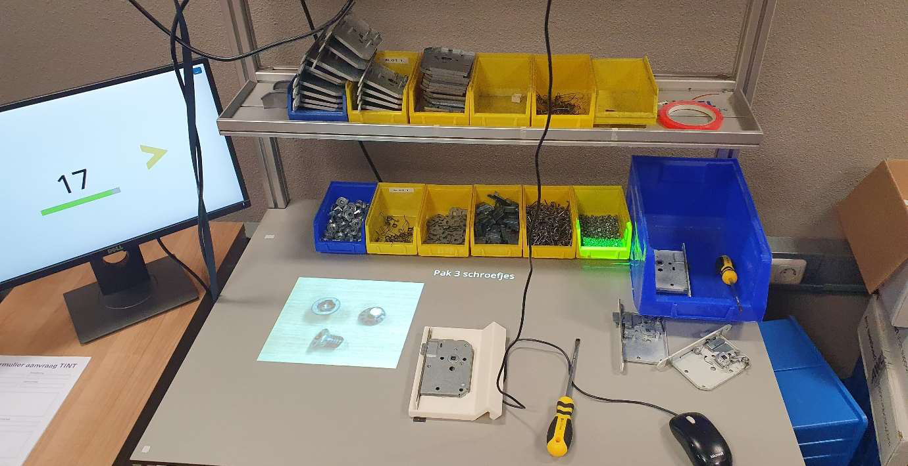

Human Factors: Reducing Fatal Workplace Accidents
Human Factors research linking perception, memory, decision-making and motor skills to accident causes, with a requirements specification and two concepts - an interactive "work buddy" and a universal work instruction.
The Case
In 2023 the world saw roughly 3 million deaths from work-related accidents and diseases (International Labour Organization): about 2.6 million from illness and 330,000 from direct accidents. Manuals and instructions are often written without involving the user, so not everyone can follow a "good" manual without mistakes - and in heavy industry a single mistake can be fatal. Our goal was to reduce these numbers by introducing a safety wayfinder in high-risk sectors, aiming for a 10% reduction in fatalities within the first year.
Research Question & Method
The main question was: "Which Human Factors influence work-related accidents?" The theoretical base was Introduction to Human Factors (Stone et al., 2018), extended with scientific articles. Findings were organised around four human factors: perception, memory, decision-making and motor skills.
Human Factors Theory
- Visual displays can be judged on seven factors; dynamic displays are easier to notice and understand than static ones.
- Attention splits into selective, divided attention and vigilance, which already drops after about 30 minutes.
- Decision-making relies on heuristics and improves with training and decision aids.
- Intrusive thoughts affect 80-99% of people, with "negative urgency" the strongest predictor.
- Long working hours have a causal link with accidents, and clear text-plus-image work instructions reduce errors.
- Situational awareness has three levels - perception, comprehension and projection.
- Average attention span is around 10-15 minutes, and eye-tracking reveals which elements draw attention.

How people read a sign

Work-buddy inspiration
Requirements
From this theory we built a requirements specification grouped by human factor: convey sound information with dynamic displays and text-plus-image instructions steered by eye-tracking; respect a 10-15 minute attention span and strengthen memory through training; teach self-control (e.g. mindfulness) and train decision-making; account for slower reaction times and fatigue; support situational awareness; and design together with workers and employers in line with safety laws.
Concepts
Two concepts were developed:
- Work buddy - an interactive, live guide with laser-guided visual indications and projections, a progress bar, periodic refreshers, mental exercises (mindfulness/meditation), enforced breaks that respect the 10-15 minute attention span, and an eye-tracking-tuned display.
- Universal work instruction - a clear, standardised instruction built on the six work-instruction principles, in multiple languages and a dynamic digital version.
Conclusion & Recommendation
The biggest advantage of the work buddy is interactivity: it can measure how a worker acts and give feedback, whereas the universal work instruction is one-way. Because it can satisfy most of the requirements and directly addresses person-bound causes such as intrusive thoughts, fatigue, impulse control and attention span, we recommended the work buddy as the concept with the most potential to reduce fatal workplace accidents. The main trade-off is cost versus how broadly it can be rolled out and personalised.